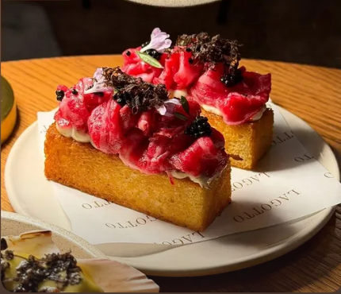
Fresh Victorian black truffle, shaved at the table — 3g per serve. Suggested over the stracciatella, bavette tartare and Jerusalem artichokes, both steaks (the Black Opal wagyu rump and the Robbin's Island oyster blade) and the tiramisu. A truffle upgrade on the brioche can also be offered verbally for $7.50. The celeriac lasagne and the parmesan gelato already come with truffle, so no add-on is needed there. Victorian truffle season runs through winter, which is why it's on the menu now.
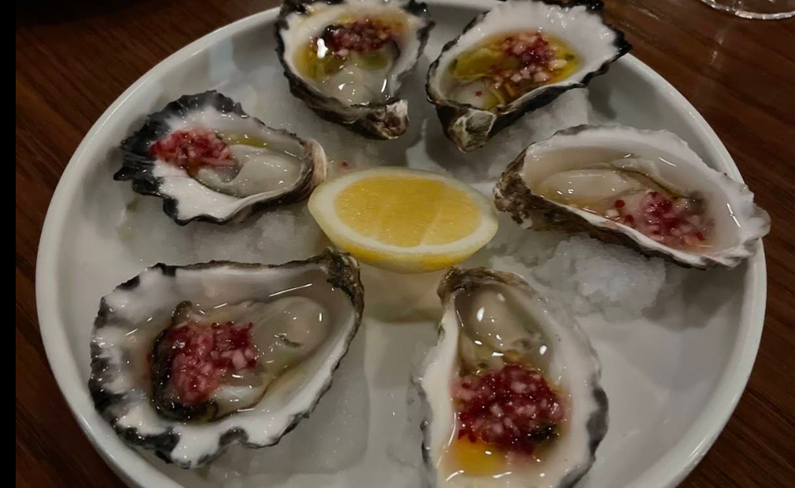
Buttermilk is emulsified with lemon oil and seasoned with salt. For the mignonette, fresh raspberry is finely chopped and mixed with chardonnay vinegar, lemon oil and shallots.
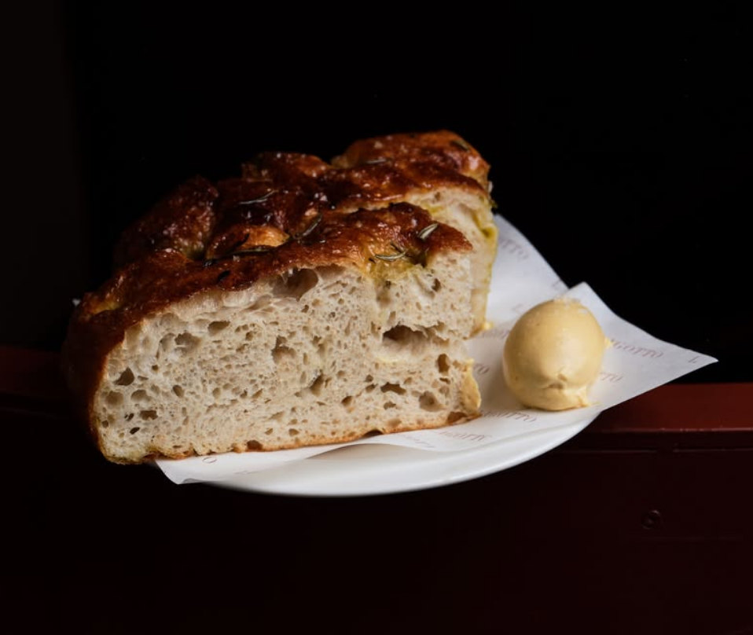
The dough uses a small amount of fresh yeast and a four-hour process of stretch, fold and rest before the dimples are pressed in, the dough is lathered in olive oil and rosemary and baked. The slower, more natural sourdough fermentation gives the bread its spring, and potato in the dough retains moisture for a softer, chewier crumb. The butter is browned, strained and smoked, then mixed with vegemite and whipped for service, with caramelised milk solids folded back in for texture.
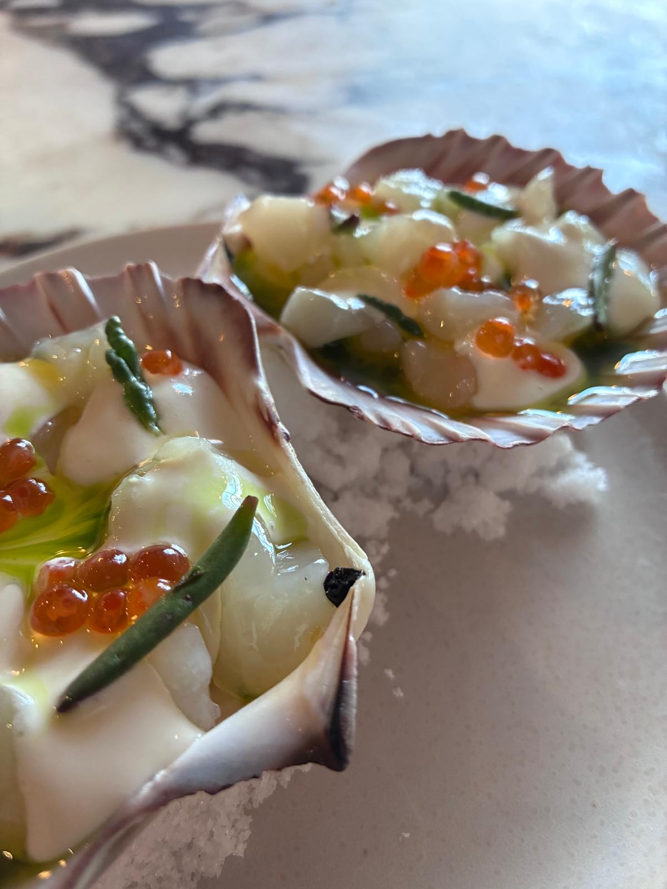
Exceptional scallops from Shark Bay in Western Australia, lightly cured with a little salt and served raw. The macadamia milk is a blend of macadamia and soy milk. Wild garlic is infused into canola oil to make a green oil, and the dish is finished with trout roe.
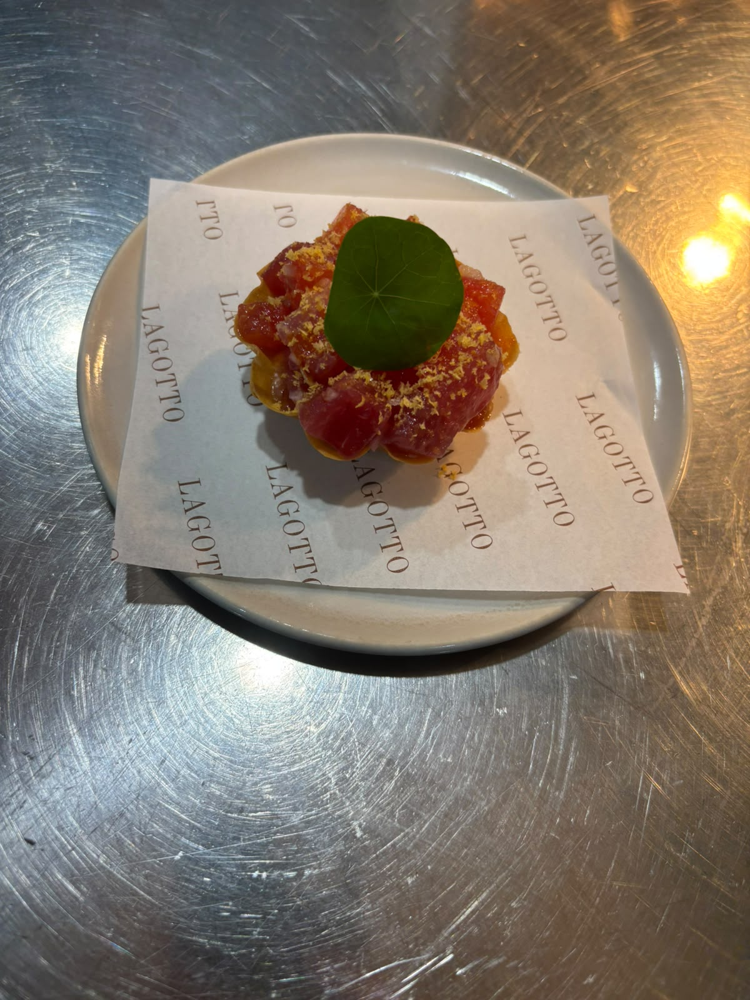
Spring-roll pastry case, lined with smoked crème fraîche, filled with cubed bluefin tuna crudo and watermelon (adds texture and freshness). Both the tuna and watermelon are dressed in a ponzu dressing, finished with finger lime.
Brioche from To Be Frank bakery, cut into small rectangles and toasted. Wagyu carpaccio (Robbin's Island, cut from the cow's thigh) sits on top with avruga caviar. The citrus element is now yuzu.
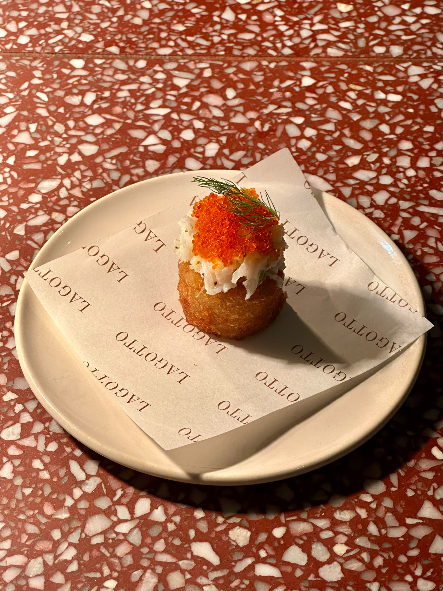
Grated potato seasoned with salt and pepper, shaped and deep-fried. The rosti is topped with spanner crab dressed in a mussel cream (mussel, lemon oil and canola oil), then flying fish roe, with fennel fronds over the top.
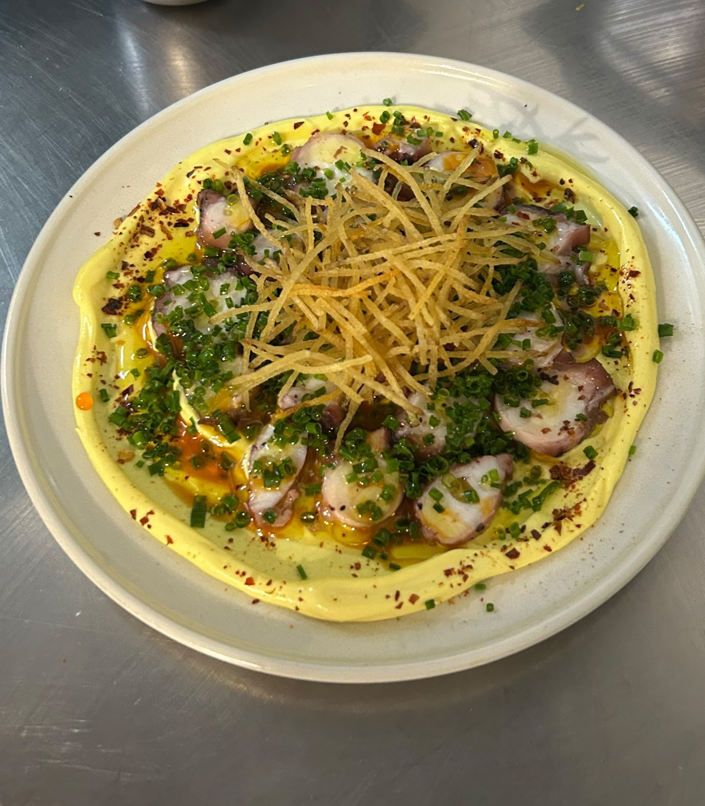
Octopus from Fremantle, WA — confit in oil, sliced into circles, spread on saffron rouille (essentially a mayonnaise with the addition of potato). Finished with crispy frites and espellette (a mild ground chilli typical of the south of France). Suitable for pregnant guests with the saffron rouille served on the side.
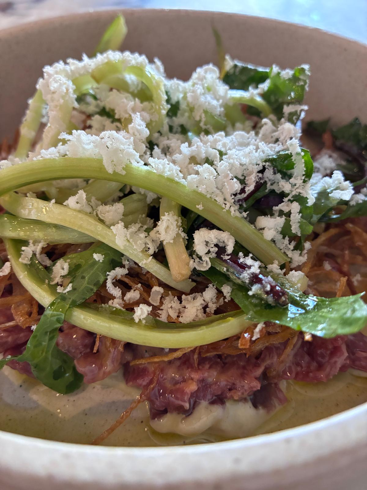
Wagyu bavette — a cut from underneath the cow's stomach, particularly lean, which makes it great for tartare. The beef is diced and dressed in a BBQ dressing, served on top of a tonnato sauce (tuna emulsified with oil, egg and anchovy). Puntarelle, a chicory-like leaf, is served raw on top, and bone marrow is kept frozen so it can be grated over the dish to finish.
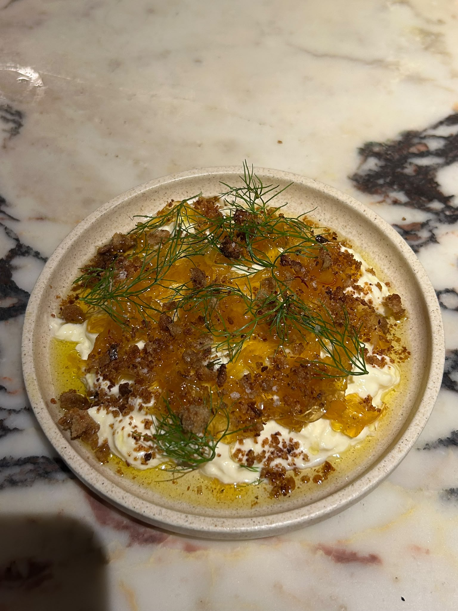
Stracciatella is a soft cow's milk cheese — the soft centre of burrata — made in Australia, so it is pasteurised. The fennel jam is made by heating vinegar and sugar until reduced, then dropping in saffron, shaved fennel and lemon, much the way you'd make a marmalade. Alto mandarin-infused olive oil finishes the plate.
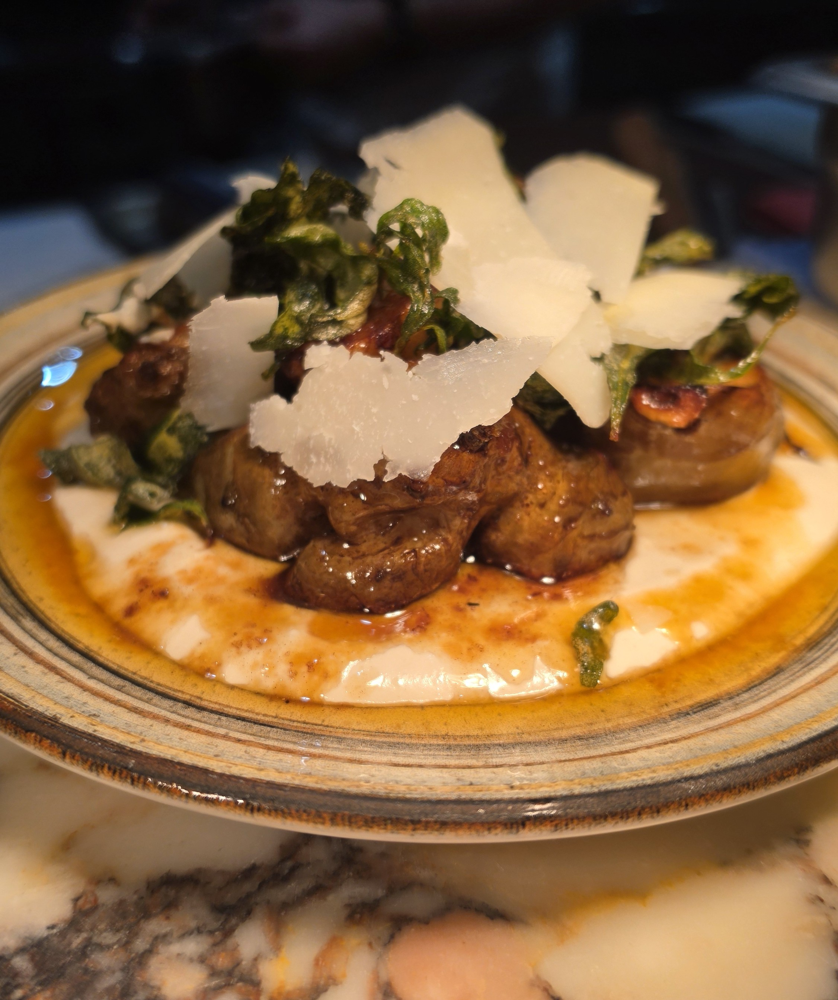
The artichokes are cut into halves and slow roasted, then served with hazelnut cream, pecorino and saltbush. The hazelnut cream contains shallots but no garlic.
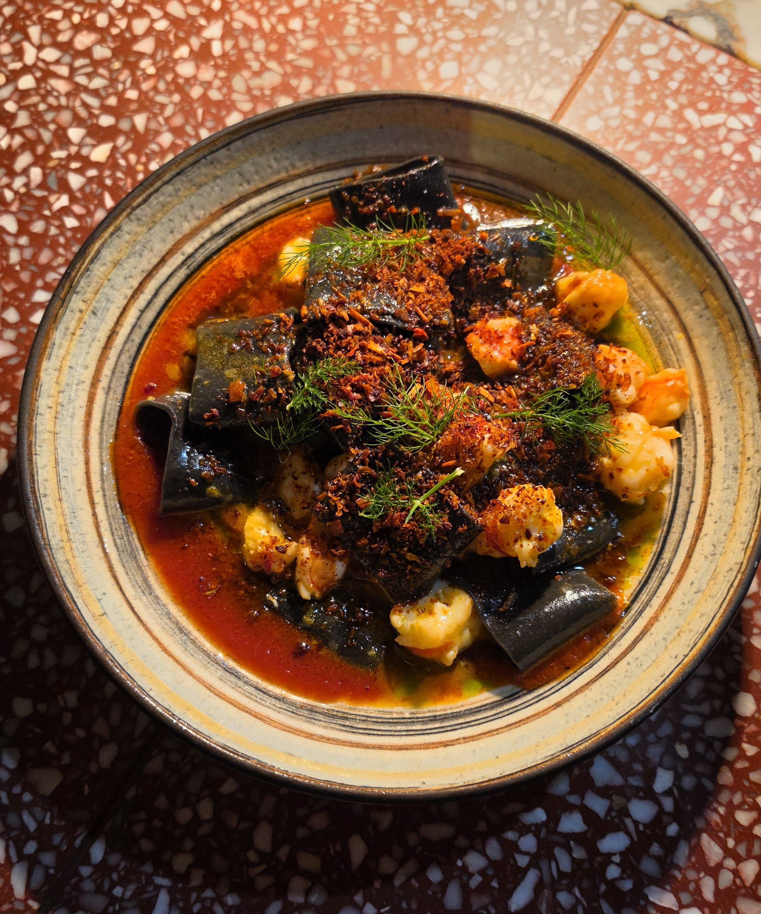
Conchiglie means shell in Italian, the pasta is shell shaped so holds the sauce well. Tiger prawns are cooked in the pan, then the vodka sauce is added (onion, garlic, tomato, roasted prawn shells, cream, vodka). Finished with wood sorrel — a citrus-tasting herb — and a crunchy prawn powder made from roasted, blitzed prawn shell.
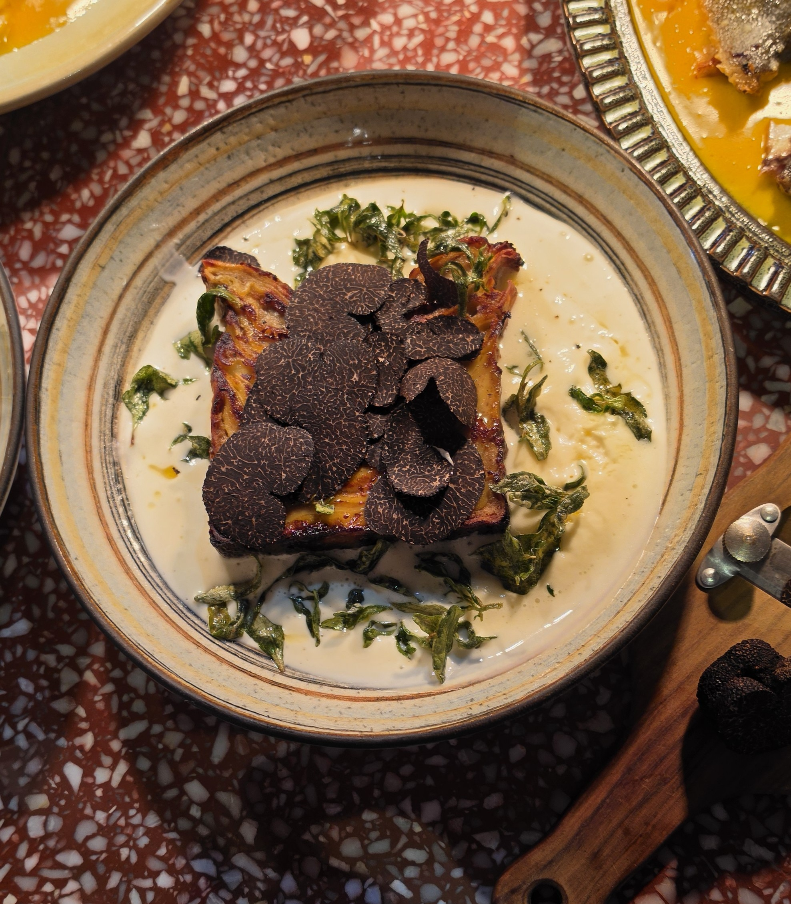
Celeriac (a root vegetable, a little like parsnip) is sliced thinly and layered between pasta and a béchamel made with truffle and porcini mushroom, baked, then each portion is grilled on both sides and finished in the oven to order. It sits on a foam made with cream, milk and 24-month parmesan, with black truffle shaved on top (currently Manjimup, WA; sometimes Victorian).
Tortellini is a filled pasta, here we fill the pasta with confit duck leg ragu & parmesan bechamel. Then the pasta is served simply in a deep bowl with a duck reduction and then finished with saffron oil.
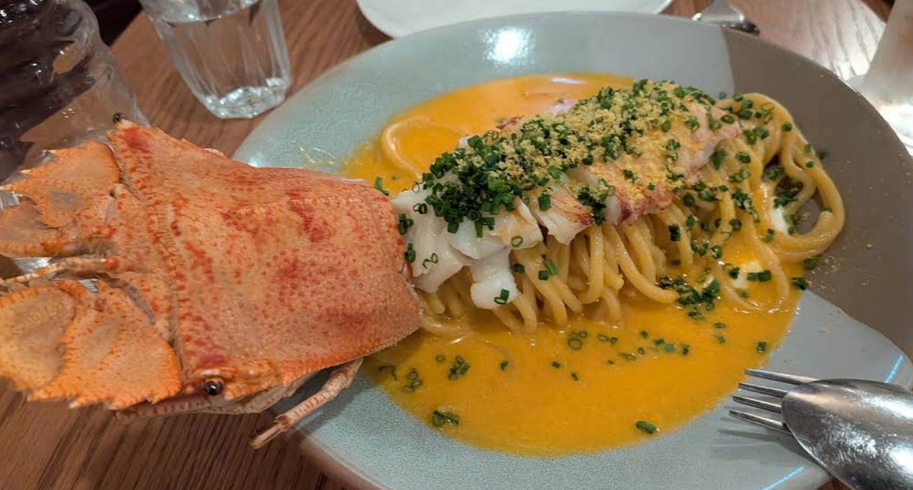
Lemon bigoli is a thicker style of spaghetti with a great al dente texture — lemon is added to the pasta dough itself. Moreton Bay bugs (similar to a lobster, from Moreton Bay in Queensland) are sous vide until only just cooked. The yellow tomato sugo is made with onion, garlic, yellow tomatoes and a touch of honey. Underneath the bigoli sits a bottarga cream — bottarga (dried, cured fish roe) blended with oil — with chives to finish.
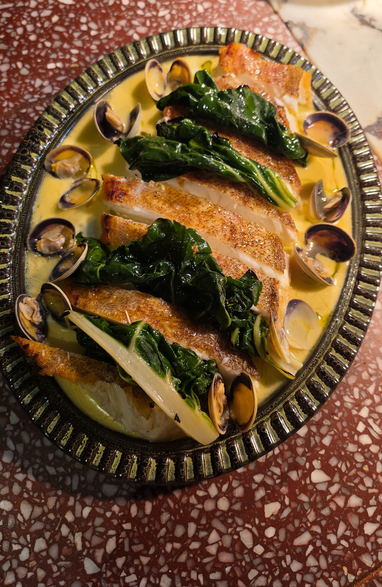
This is the rotating fish slot. The garnish stays broadly consistent whatever the fish: a beurre blanc, pippies and silverbeet (or another green leafy vegetable), all of which can be left off. The fish is usually floured before it goes on the grill, which can also be done without. Currently printed as a whole 650g side of Coral Trout.
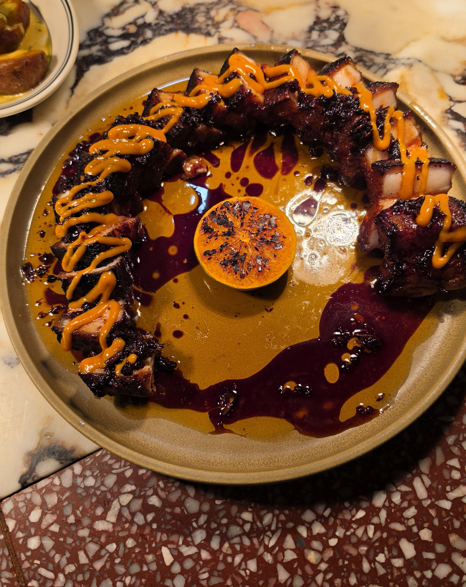
Ryukyu Berkshire pigs are known as the wagyu of the pig world for their amazing marbling — black-furred pigs raised near Byron Bay. The pork is brined for 24 hours, sous vide for two hours, then finished on the grill in service, dressed with the kitchen's XO and a fermented chilli sauce, with citrus alongside.
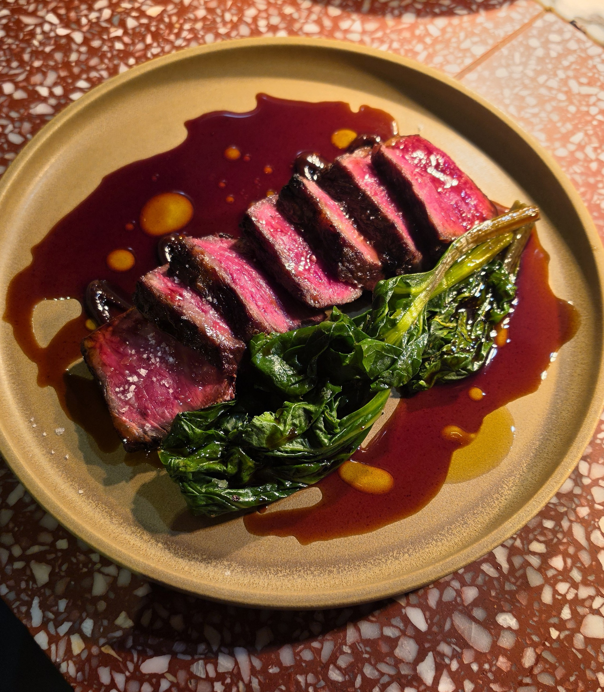
Black Opal is a wagyu supplier working out of Tasmania — a cross of 50% Japanese wagyu and 50% Black Angus. The rump comes from the top of the cow's behind and is a fairly lean cut, grilled to order. Erbette is a chard-like leafy green. On the à la carte the steak is dressed with a black garlic ketchup and jus.
Robbin's Island is a small island off the north-west coast of Tasmania — when the tide is in the island is separated from the mainland, and when it goes out it reconnects. It's considered one of the best wagyu projects in the world thanks to that environment. This is the grass-fed oyster blade, 300g, at 9+ marbling — 9+ is the highest wagyu score in Australia. Oyster blade is cut from the shoulder, a well-worked and deeply flavoured muscle rather than a lean prime cut, served with rosemary and jus.
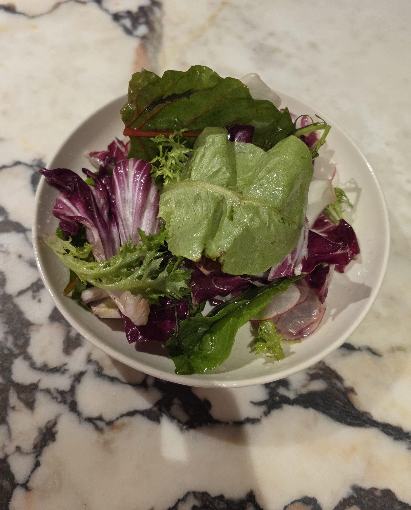
Tasting notes not yet logged for the current version of this dish — ask the kitchen.
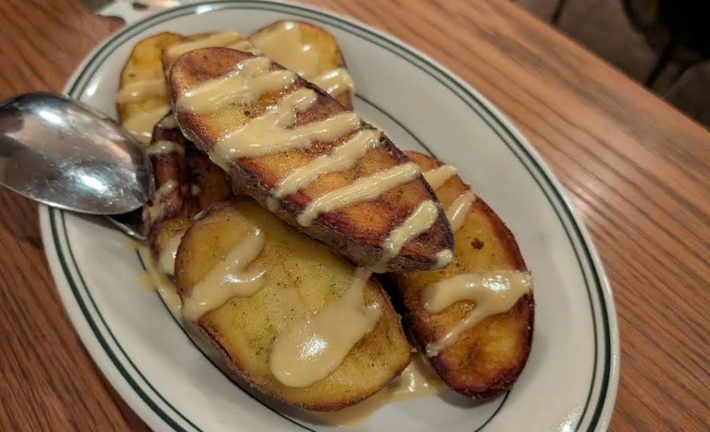
Tasting notes not yet logged for the current version of this dish — ask the kitchen.
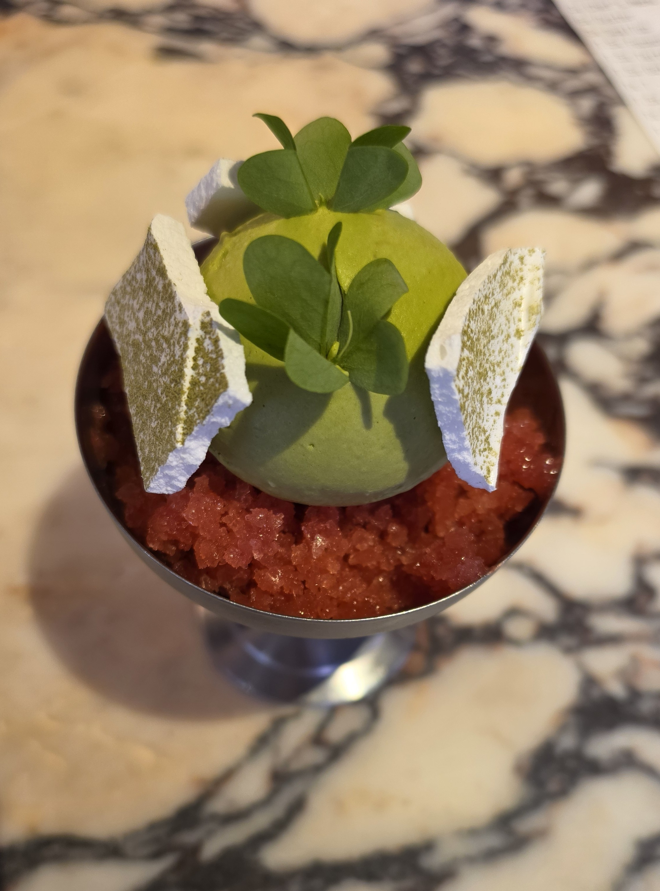
Strawberry puree, sparkling water and glucose are frozen together and then shaved to order. The gelato is a white chocolate base flavoured with matcha. Served with egg white meringue shards dusted with matcha powder.
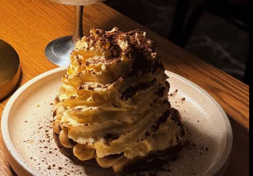
Base is a flourless chocolate sponge. A hazelnut crème mousseline — essentially a hazelnut pastry cream, which contains a little flour — is piped onto the sponge. Coffee gelato is made with eggs, cream, sugar and coffee. Caramel is a whey caramel (brown sugar and whey). A mascarpone-and-vanilla foam is siphoned on top to finish.
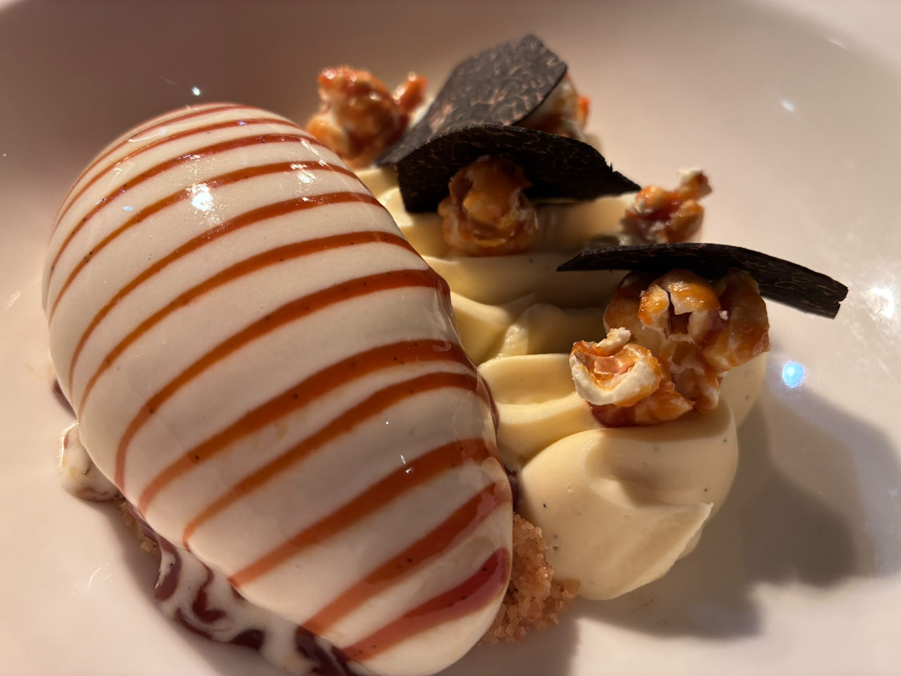
The gelato is built on a base of buffalo milk and fior di latte with grated 24-month parmesan folded through — no eggs in the gelato itself. The cheesecake is cream cheese, cream, sugar and vanilla bean, baked and then blitzed to a cream. All the whey from the buffalo milk is reduced down and mixed with sugar and bicarb to make the caramel, and the popcorn is caramelised in that same caramel and salted. Served with a biscotti crumb, which can be left off.